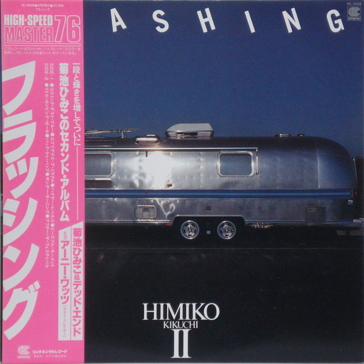

Evénement: Soirée jazz fusion japonais avec Himiko Kikuchi
Le vendredi 18 et samedi 19 janvier à partire de 20h
L'artiste:

Himiko kikuchi est une pianiste de jazz née à Hamamatsu au Japon le 26 mars 1979.
Himiko est influencée par un éventail très large de musiques. Elle déclare à ce propos : « J’aime Bach, j’aime Oscar Peterson, j’aime Franz Liszt, j’aime Ahmad Jamal. J’aime aussi des gens comme Sly and The Family Stone, Dream Theater ou King Crimson. Je suis également très inspirée par des athlètes comme Carl Lewis ou Michael Jordan. En fait, je suis inspirée par tous ceux qui ont une grande, grande énergie. Ils me touchent vraiment directement au cœur.
La pianiste est reconnue pour sa virtuosité et son énergie, autant dans sa musique que lors de ses prestations scéniques. Elle mélange les styles, bebop, post-bop, stride, rock, funk, reggae, tout en gardant l’improvisation au centre de sa musique. Si elle aime se réapproprier certains standards, la majorité de ses albums sont constitués de ses propres compositions très diverses et souvent sophistiquées.
Les Plats:
Ramen:
Le Ramen est une soupe de nouilles très populaire au Japon. Les nouilles de Ramen sont à l’origine des nouilles chinoises, mais cela a été amélioré au fil du temps et a évolué vers la gastronomie japonaise.

Sushi:
Le sushi est un plat traditionnel japonais, composé d'un riz vinaigré appelé shari combiné avec un autre ingrédient appelé neta qui est habituellement du poisson cru ou des fruits de mer. Cette forme d'art culinaire est un des emblèmes de la cuisine japonaise dans le monde, alors que sa consommation n'est qu'occasionnelle au Japon.